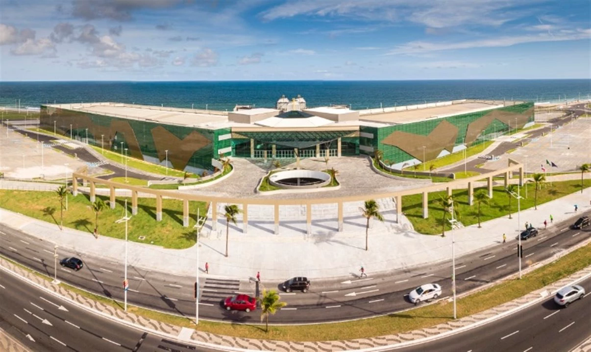

O TechFuture Summit é mais do que um evento — é um encontro de mentes criativas, desenvolvedores apaixonados e designers visionários que querem transformar o amanhã, hoje.

É um espaço dedicado à troca de ideias, experiências e inovações nas áreas de tecnologia e design.
Neste evento, o foco será nas tendências emergentes que estão moldando o futuro do desenvolvimento web, inteligência artificial aplicada ao design, experiências digitais mais humanas, e o papel da colaboração entre desenvolvedores e designers na criação de soluções inovadoras.
Um evento imperdível para quem quer se manter atualizado e conectado com o futuro da tecnologia.
Descubra as tendências mais quentes da tecnologia, inspire-se com grandes nomes do mercado, conecte-se com outros profissionais e dê um salto na sua carreira!
Garanta sua vaga e venha viver uma experiência que vai marcar sua jornada profissional!
🚀 Inscreva-se agora!
O TechFuture Summit acontecerá no dia 01 de junho de 2025 , no moderno Centro de Convenções de Salvador, um espaço totalmente preparado para receber profissionais e entusiastas da tecnologia.
